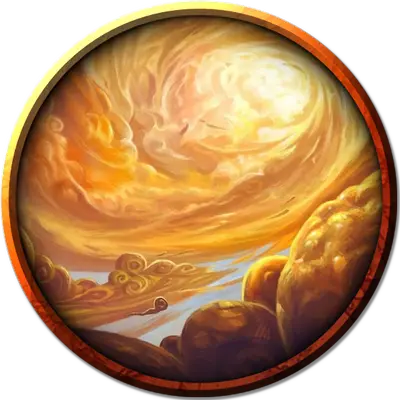

Колыбель облачного отпрыска
Cradle of the Cloud Scion
Громадный Элементаль, обычно хаотично-нейтральный

Класс Доспеха 19 (природный доспех)
Хиты 624 (32к20 + 288)
Скорость 0 футов, летая 90 футов (парит)
| мод | спас | ||
|---|---|---|---|
| СИЛ | 29 | +9 | +9 |
| ЛОВ | 21 | +5 | +5 |
| ТЕЛ | 28 | +9 | +9 |
| мод | спас | ||
|---|---|---|---|
| ИНТ | 14 | +2 | +10 |
| МДР | 22 | +6 | +6 |
| ХАР | 19 | +4 | +12 |
Сопротивление урону огонь, холод, электричество; дробящий, колющий, рубящий от немагических атак
Иммунитет к урону звук, яд
Иммунитет к состояниям захват, истощение, окаменение, опутанность, отравление, ошеломление, паралич, сбивание с ног
Чувства пассивное Восприятие 16
Языки Великаний, Первичный
Опасность 26 (90000 опыта)
Бонус мастерства +8
Особенности
Пробуждение отпрыска. Колыбель - это сосуд отпрыска Мемнора [scion of Memnor]. Когда хиты колыбели уменьшаются до 0, её остов развеивается облаками. Отпрыск мгновенно появляется в том пространстве, которое занимала колыбель, и использует инициативу колыбели.
Пролёт. Колыбель не провоцирует атаку, когда она вылетает за пределы досягаемости врага.
Легендарное сопротивление (5/день). Если колыбель проваливает спасбросок, она может вместо этого сделать спасбросок успешным.
Сопротивление магии. Колыбель совершает с преимуществом спасброски от заклинаний и прочих магических эффектов.
Осадный монстр. Колыбель наносит двойной урон объектам и сооружениям.
Действия
Мультиатака. Колыбель совершает три атаки Размашистым ударом или Копьём ветра, в любой комбинации.
Размашистый удар. . Рукопашная атака оружием: + 17 к попаданию, досягаемость 20 футов, одна цель. Попадание: 31 (4к10 + 9) дробящего урона плюс 19 (3к12) урона звуком.
Копьё ветра. . Дальнобойная атака оружием: +17 к попаданию, дистанция 120 футов, одна цель. Попадание: 27 (4к8 + 9) дробящего урона плюс 10 (3к6) урона звуком, и цель должна преуспеть в спасброске Силы Сл 25, иначе упадёт ничком.
Вихрь (перезарядка 5-6). Колыбель создает вихрь ветра в точке, которую она может видеть в пределах 90 футов от себя. Вихрь ветра представляет собой цилиндр радиусом 30 футов и высотой 100 футов с центром в этой точке. Каждое существо, кроме колыбели, в этой области должно совершить спасбросок Ловкости Сл 25. В случае провала существо получает 71 (11к12) дробящего урона и становится опутанным, оказываясь внутри вихря. В случае успеха существо получает половину этого урона и перемещается в ближайшее незанятое пространство за пределами цилиндра. Вихрь существует до начала следующего хода колыбели. Опутанное существо падает ничком, когда вихрь заканчивается.
Опутанное существо может действием попытаться вырваться из вихря. Оно должно совершить проверку Силы (Атлетика) Сл 19 или Ловкости (Акробатика). В случае успеха существо вырывается и перемещается на расстояние 3к6 × 10 футов от вихря в случайном направлении.
Реакции
Раскат грома. Сразу после получения урона колыбель испускает удар грома сферой радиусом 30 футов, с центром на себе. Каждое существо в этой области должны преуспеть в спасброске Телосложения Сл 25, иначе получит 18 (4к8) урона звуком и становится оглохшим на 1 минуту.
Описание
Дремлющий отпрыск Мемнора предстает в виде плотной, медленно дрейфующей башни из облаков, которая никогда не рассеивается. Часто это облако задерживается над удалённой долиной, создавая постоянно затянутое тучами небо. Разумные существа, живущие под этим облаком, часто проявляют суеверное и лицемерное поведение, почти бессознательно оставляя подарки “духам дождя” и при этом озорно подшучивая друг над другом.
При пробуждении, колыбель облачного отпрыска проявляется как титанический элементаль воздуха, созданный из свирепых ветров и клочьев облаков. Он повелевает воздухом и громом, сбрасывая врагов с небес.
Если колыбель разрушена, отпрыск Мемнора появляется из рассеивающегося облака, часто смеясь, как будто только что услышал отличную шутку. Невероятно высокий и долговязый, отпрыск возвышается на 75 футов и владеет моргенштерном, магически сотканным из плотных облаков. Он склонен рассматривать других существ скорее как игрушки, чем как серьезную угрозу, и использует свою магию иллюзии, чтобы заставить существ сражаться друг с другом. Если ему угрожает серьезная опасность, он использует гром и ветер, чтобы уничтожить своих врагов.